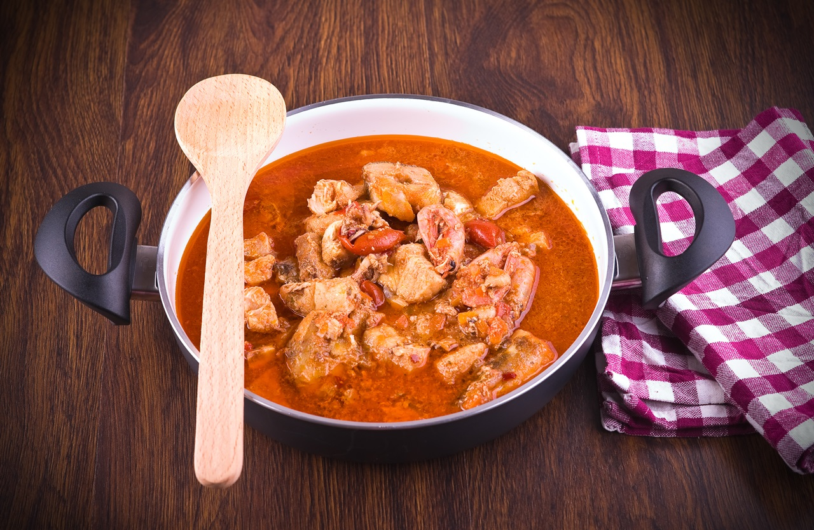
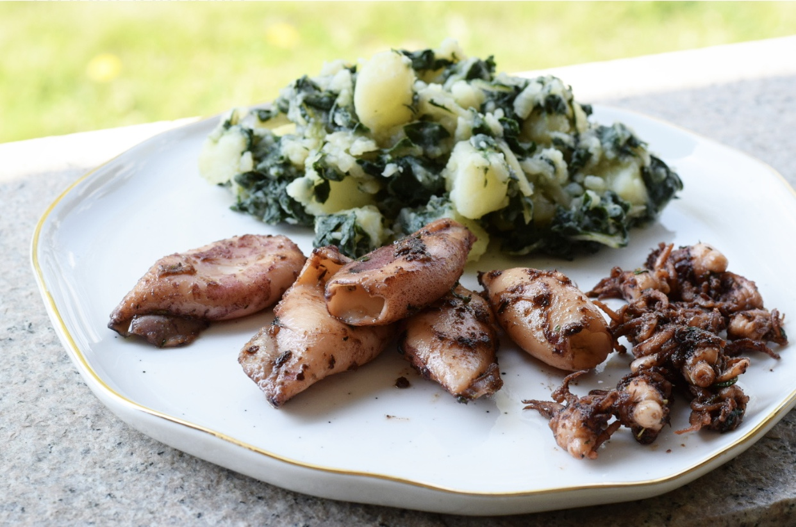
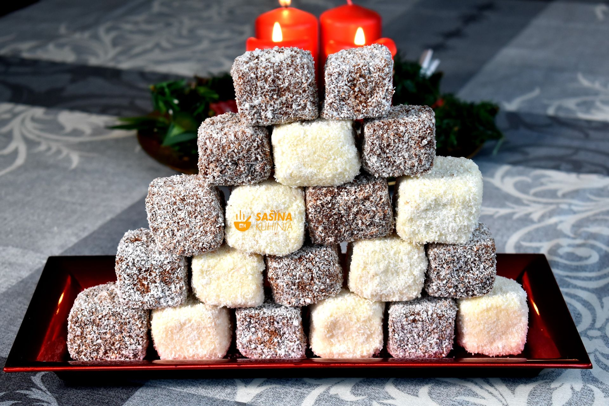
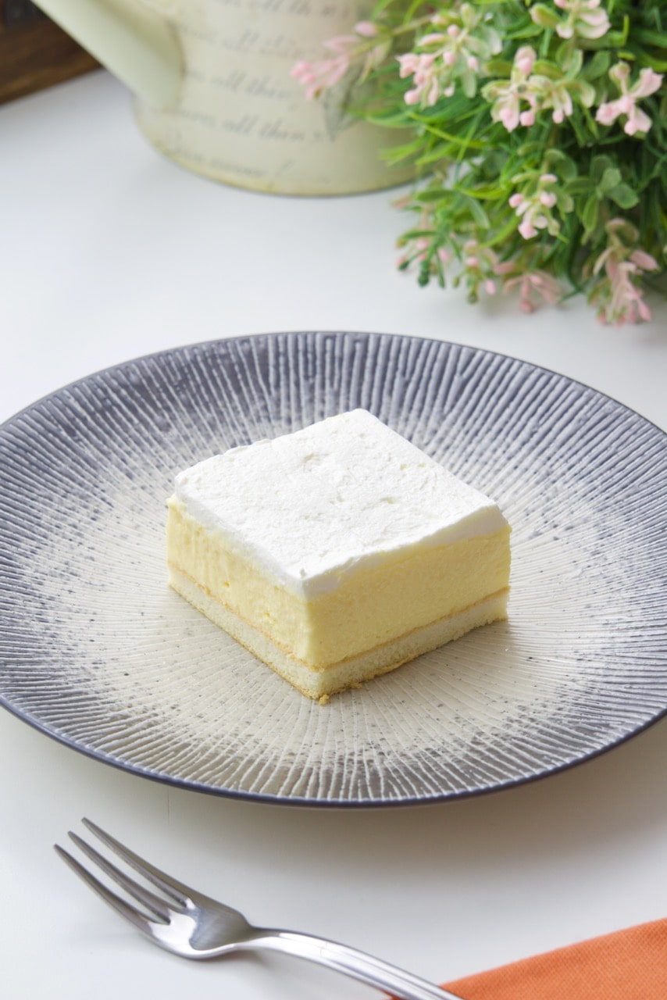

Božićni recepti
Kulinarski dijelovi Hrvatske se razlikuju, ali za Božić se pripremaju obično slična jela.
Slana jela
- Fiš paprikaš
- Lignje na žaru
Kolači
Fiš paprikaš
Sastojci
- 1,25kg ribe po izboru
- 30 dg luka
- 1 ljuti feferon
- 1 žličica mljevene ljute paprike
- 1 dl pirea od rajčice
- 2 dl bijelog vina
- sol, papar
Priprema
Ribu nasijecite na manje komade. Naribani luk skuhajte u malo vode. Dodajte ostale sastojke i kuhajte
30-40minuta. Poslužite uz tjesteninu.

Lignje na žaru
Sastojci
- 1kg lignji
- maslinovo ulje
- 4 režnja češnjaka
- nasjeckani peršin
- 50 dg blitve, 20dg krumpira
- 1 limun
- sol, papar
Priprema
Lignje premažite maslinovim uljem i stavite ih peći na roštilj. Pecite dok ne dobiju
zlatnožutu boju. Skuhajte blitvu i krumpir. Začine dobro promiješajte.
Lignje poslužite začinjene s prilogom od blitve i krumpira.

Čupavci
Sastojci za biskvit
- 3 jaja
- 220g šećera
- 180ml ulja
- 300g glatkog brašna
- 120ml mlijeka
- prašak za pecivo
- 2 žlice kokosa u prahu
Sastojci za čokoladni preljev
- 150g čokolade
- 200ml mlijeka
- 150g maslaca
- 200g kokosa
Priprema
Izmiksati sastojke za biskvit te ispeći biskvit. Peče se na 120 stupnjeva otprilike 30min.
Ohlađeni biskvit nasjeći na kockice i umeljati u čokoladni preljev.

Ledene kocke
Sastojci za biskvit
- šećer (5 žlica)
- brašno (5 žlica)
- mlijeko (70ml)
- prašak za pecivo (1)
- bjelanjak (5)
Sastojci za kremu
- 5 žumanjaka
- šećer, brašno, vanilin šećer
- margarin
- šlag
- mlijeko
Priprema
Za biskvit dobro izmješati sastojke i ispeći. Skuhajte kremu. Kada se sve ohladi, biskvit
premazati kremom te staviti šlag. Poslužiti ohlađeno.
